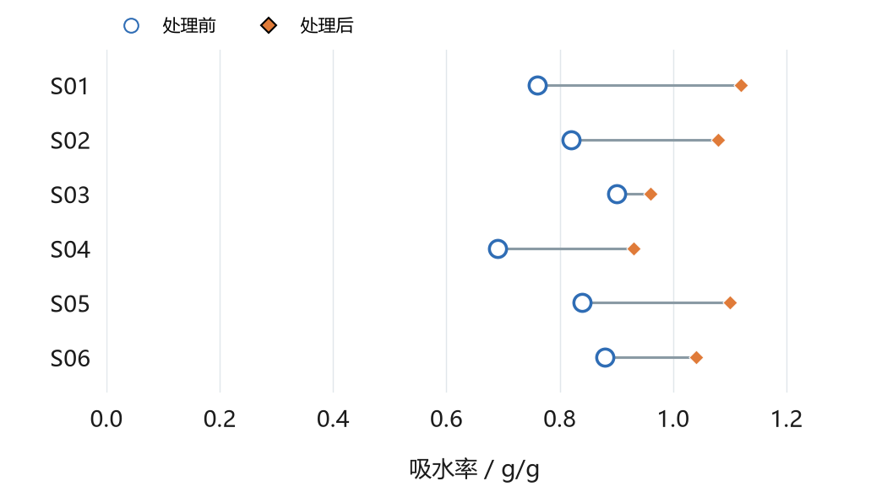
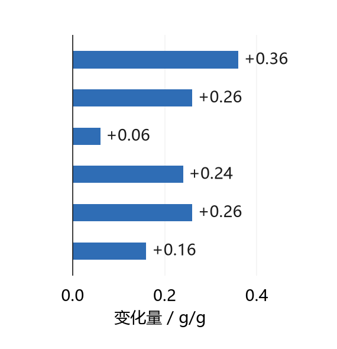

配对观察 / 每个编号保持同一样本
同样的方向，
不同的幅度。
06
对配对读数
6/6
个样本读数增加
0.06—0.36
变化范围 / g/g
A / 保留配对，观察每一个样本

B / 同一行，比较变化幅度

A 将同一样本的两次读数连接，保留原编号顺序。B 使用相同顺序，直接显示后一次减前一次；两幅图回答不同读图问题。
配对观察 / 每个编号保持同一样本
对配对读数
个样本读数增加
变化范围 / g/g


A 将同一样本的两次读数连接，保留原编号顺序。B 使用相同顺序，直接显示后一次减前一次；两幅图回答不同读图问题。